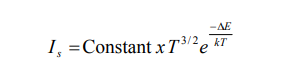
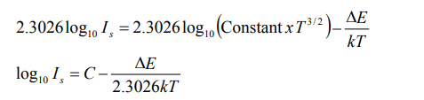
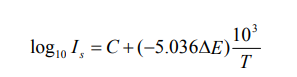
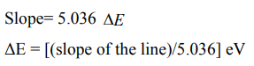

Aim:
To determine the band gap in a semiconductor using its p-n junction diode.
Apparatus required:
p-n junction diode kit, electrical oven, and thermometer.
Formula Used:
The reverse biased current Is (saturated value) is the function of
temperature (T) of the junction diode. For a small range of temperature, the relation is
expressed as,
Log10 Is = constant – 5.036 ΔE (10^3/T)
where, temperature T is in Kelvin, ΔE is the band gap in electron volts (eV).
Theory:
In a semiconductor, there is an energy gap between its conduction and valence band. For the conduction of electricity a certain amount of energy is to be given to the electron so that it goes from the valence band to the conduction band. The energy so needed is the measure of the energy gap (ΔE) between two bands. When PN junction is placed in reverse bias, the current flows through the junction due to minority charge carriers. The concentration of these charge carriers depends on band gap (∆E). The saturation value of reverse current (Is) depends on the temperature of junction diode and it is given by equation,
where, k=1.38 x 10-23 J/K is Boltzman’s constant and T is absolute temperature of junction. Taking log of both sides of above equation,
where C is a constant which is equal to the first term of RHS of above equation (for small changes in temperature, log T can be treated as constant). On substituting the value of k and converting the unit of ΔE , we get
This represents a straight line (y=mx+c) having a negative slope (5.036 ΔE ). Therefore, by knowing the slope of the line, ΔE can be determined through following formula
Procedure:
Observations:
Enter the values of I's for the specified temperatures: